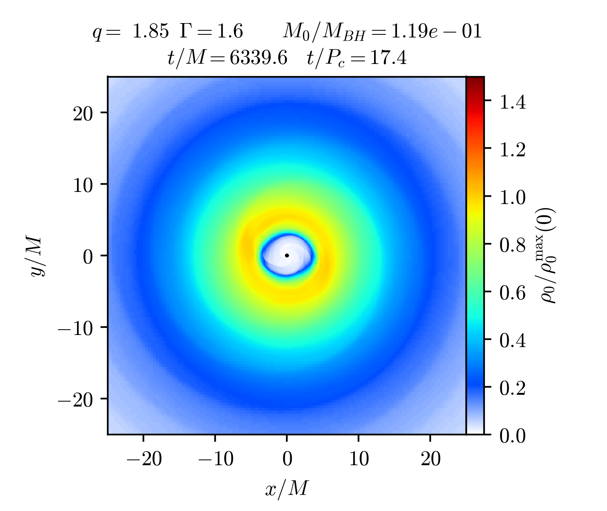

My research focuses on computational astrophysics, numerical relativity, and high-performance scientific computing. I use large-scale simulations to study compact objects and gravitational waves.

Black hole accretion disks are rapidly rotating disks of gas surrounding black holes. My work includes GRMHD simulations of accretion flows, magnetic field evolution, jet formation, and visualization of simulation results.
Binary neutron star mergers provide an important laboratory for studying strong-field gravity, dense nuclear matter, and multi-messenger astronomy. My research involves numerical relativity simulations of neutron star coalescence and the post-merger remnant.
Gravitational wave memory is a permanent displacement of spacetime after the passage of a gravitational wave burst. My interests include numerical calculations of memory effects from compact binary mergers and their potential observational signatures.